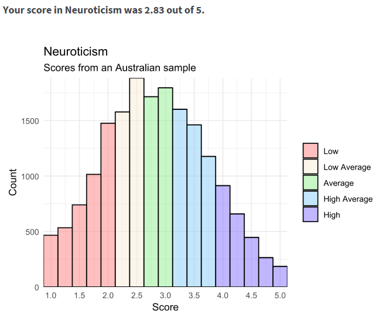

HAPPY NEW YEAR 🎉
I trust you all had an EXCEPTIONAL 2025 and like myself have come
flying into 2026 revitalised to
MAXIMUM LEVELS!
Today, I am absolutely over the moon to deliver an electric piece on the
topic of personality. As always I have included bonus extracurricular
material for the avid pupil. The
STEELE INVENTORY TEST, located in Appendix A. If completed please
message me your answers, I will mark them personally and provide
tailored feedback.
Announcements 📣
Congratulations to Joe Widdrington, more formally known as Widzy for
completing last issues STEELEQ Test on the topic of intelligence.
Widzy is a professional academic who researches vital topics to keep the
hot water running. His responses demonstrate professionalism and an
exemplimentary understanding of the content in both the rapid fire and
short answer sections.
FANTASIC WORK WIDZ!

What is personality?
Personality sets out to describe individual differences regarding patterns
of thinking, feeling, and behaving that remain relatively constant
across different environments, situations and over an extended period
of time , often spanning years and decades. (Haslam & Smilie, 2022).
Why should we care about personality?
Social Creatures
Discussions around personality can be traced back to the old days of 319
BC to the tremendous Theophrastus, “Often before now have I applied my
thoughts to the puzzling questions – why it is that, while all Greece lies
under the same sky and all the Greeks are educated alike, It has befallen
us to have characters so variously constituted”.

Whether it over tea and biscuits with friends or playground gossip we have
all attempted to describe what either ourself or another person is
generally like. We are social animals that are motivated to understand how
we are like all people, like some people, or like no other person, Murray,
and Kluckhohn (1953).
Personality predicts real world outcomes
It is worth studying personality because personality predicts real-world
outcomes that matter including academic success, job performance and other
important life outcomes with known accuracy. More specifically and
especially in todays modern world of fandangle gizmos and gadgets, it is
not uncommon to hear phrases like "TikTok knows me too well”, this is
because the footprints we leave especially on social media, can be used to
profile our personalities, often used for tailoring services and content
right to our preferences, so that we stay glued and coming back for more.
For example, our behavioural patterns on social media is used to infer our
personalities. People high in extraversion can be distinguished with ~70%
accuracy, characterised by behaviours like higher levels of activity and
having a greater number of friends compared to most other people
(Blackwell et al., 2017) . Individuals higher in the trait
conscientiousness can be distinguished ~68% of the time characterised by
behaviours such as cautious management of their profiles, posting less and
expressing fewer likes on other peoples posts, (Amichai-Hamburger &
Vinitzky, 2010),
mind you this study was published in 2010 I would imagine it has been
improved since then.
Personality Traits
Personality traits are commonly used to describe personality. In
psychology a personality trait has a refined definition, (Haslam & Smilie,
2022).
| Principle |
Description |
| ✔ Psychological not physical |
Refers to psychological phenomena, e.g. modest not
tall.
|
| ✔ Enduring not transient |
Refers to an enduring trait consistent over time, spanning a matter
or years or decades and not a fleeting emotion. warm not
sad.
|
| ✔ Broad not specific |
Broadly describes behaviours across a number of situations. E.g.
disciplined not pizza lover.
|
What are valid personality traits?

What are not personality traits?
Fruitcake, tall, malaka, hot cross bun lover or arsenal supporter are not
valid traits.
Hypothetical example and common mishaps
Franklin has just started playing tennis; his new peers describe him as
sociable because his mouth does a lot of flapping. Frankfurt also
frequents church for gospel studies and the countryside to attend bird
watching seminars. However, Frankfurt is much quieter and far more
reserved during his time at church and bird watching seminars. Because his
talkativeness is observed only at the tennis club; it reflects situational
exclusivity. Further in this example, there is not enough evidence to
conclude that this sociableness has been consistent over a long period of
time.
Do you have a personality type?
No.
Myers Briggs Nonsense Inventory
I would be unsuprised if you have taken something like the Myers-Briggs
Nonsense Test (MBTI), an inventory that when completed outputs your
personality type like ‘INTJ’ or ‘BSBS’. If instructed to do an MBTI, I
would suggest tossing it into the loo and be sure to use the
FULL FLUSH setting, not the half flush setting. Personally, I would
ensure my bladder was emptied prior to flushing
🚽. I also almost fell sideways
when the Myers Briggs wesbite told me I would have to flush 85 AUD down
the toilet to get told my personality type.

If you are like me and have spent your spare time wondering how such
waffle has turned into a US$2 billion personality assessment industry
(Manne, 2014). A good starting point would be to investigate the authors
Katherine and Isobel Briggs and the material that formed the basis of
their ideas. who started working on it in the 1940s. Neither Katherine
or Isobel had formal training in psycholgy or psychiatry, Katherine
Briggs earned a college degree in agriculture and her daughter Isobel
was educated in drama. The Briggs dabbled in pscyhology during their
spare time and specifically Katherine was infatuated by the
LEGENDARY Carl Jung, but also seemingly Carl Jung himself,
publishing poems and songs which declared his greatness.

Carl Jung made many amazing contributions to psychology, but his theory
on personality types has been tossed in the garbage tin by the
professional academic community. When Jung himself is put under the
microscope, we can understand how his past experiences shaped his view
of personality types. A theorist's work is rarely uninfluenced by their
own personality and life experiences (Wrightsman, 1994). Jung often
sorted the world into vast dichotomies, that is, black or white,
positive or negative. Rarely did he describe any shade of grey . . . As
a young chap, Jung saw himself as having two distinct personalities,
personality 1, which he believed was known to his parents and others and
personality 2, reserved for when he was attending to vital matters such
as studying the mysteries of the universe” (Stolorow & Atwood, 1979.
P.98).
To quickly diverge, Jungs mentor who many would know, the
SENSATIONAL Sigman Freud also illustrates how personality and
previous life experiences can flavour someones view of the world.
Freud's theory on psychosexual development revolves aroud the core idea
that people are primarily motivated to peruse biological reward. When
considering Freud's previous education and work experience as a
biologist, his decision to approach personality development from a
biological perspective makes a whole lot of sense. With all of this, it
is clear that the MBTI is built upon straw and not solid stone.
Further evidence against personality types
If personality were a type research the results of personality
measurement would produce a biomodal distribution, where people are
either introvered or extraverted and not inbetween.
 This is not seen, what is seen in the data is people expressing a trait
to a degree of difference along a continuum, where most peoples
association to a trait falls around the central tendency. In Franklins
case:
This is not seen, what is seen in the data is people expressing a trait
to a degree of difference along a continuum, where most peoples
association to a trait falls around the central tendency. In Franklins
case:
 Frankfort might on average express more behaviours associated with
introversion, when compared to a population of other people. Another
disadvantage of the personality type theory is that their exist
longitudinal studies that have shown that irrifutable evidence
personality can change over a period of years and decades, however using
the type system, the bucket you are assigned is what you get.
Frankfort might on average express more behaviours associated with
introversion, when compared to a population of other people. Another
disadvantage of the personality type theory is that their exist
longitudinal studies that have shown that irrifutable evidence
personality can change over a period of years and decades, however using
the type system, the bucket you are assigned is what you get.
Evidence against personality types can also be found in the reliability
and validity metrics of the inventories that measure them. For example,
a key realiability metric is the test-retest reliability, in the case of
the nonsense briggs, on one day its spits out oranges and taking another
day can give you a bananas, what good is that. It would also be good to
know something about what your personality type can predict in terms of
real world outcomes through predictive validity, and quite frankly not a
whole lot. There is a lot more regarding reliability and validity
metrics, but I hope to keep you awake, in short the MBTI doesn't not
come close meeting realiability and validity benchmarks for professional
psychology. Ending on a positive note I commend both them for their
enthusiasm and hard work, I imagine with a bit of formal training and
high level montoring they could have gone down as hall of famers.
THE BIG 5 (OCEAN)🔥
The BIG 5 provides a structured heirachy of personality traits. The
Highest level traits describe the five core domains of individual
differences, people differ in their own unique levels of expression, like
we saw in the example of FRANKLIN. The BIG 5 is a structured hierachy
starting with the 5 fundamental high level traits and becomes more
specific in definition, eventually arriving at the final destination of
some observable behaviour. The BIG 5 is the result of a lot of academic
that began in 1936 and used methods like statiscal clustering and factor
analysis. it is more common for people to use the mid level traits in
general conversation, e.g. if you describe someone as the high level trait
of Neurotic, id imagine the next question might be, in what way? A mid
level trait such as, Tense Timmy gives you a much better idea on what to
expect.
High level trait
Mid-level trait
Observable behaviour
🔥 Extraversion
Sociable, enthusiastic, energetic, gregariousness
Someone who is constantly bouncing off the walls.
🔥
Conscientiousness
Disciplined, organised, reliable
Someone who achieves work related success.
🔥 Agreeableness
Warm, modest, kind.
Help the neighbor clean the fish tank.
🔥 Neuroticism
Nervous, tense, moody, highly strung.
A nervous nelly.
🔥 Openness to
Experience
Imaginative, original, curious
Always up for something new to do.
BIG 5 History📜
The BIG 5 has been in works since 1936, and is the result of massive
amounts research that use methods such as clustering and factor analysis
over relevant datasets. The BIG 5 has evolved from a bottom up approach
and stands upon the basis of the lexical hypothesis, the idea that
anything of value or important enough to a society is given a word and
encoded in language.

Amazing Allport and Outstanding Odbert

Upon a marvellous sunrise in 1936, Allport & Odbert dusted off their own
personal New International Dictionary and set out to extract all
adjectives that could be used to describe individual differences. To
make in to their list, the adjective had to meet the following inclusion
criteria:
- Describes broad ways in which people can be different
- Describes temporary moods or activities.
- Describes social or character judgements of personal conduct.
-
Describes of physique, mental capacities and developmental conditions.
Out popped the small list of 4500 traits like impulisive, methodical and
sociable + another 4597.
Remarkable Raymond Cattell

Like Allport & Odbert, Cattell supported the lexical hypothesis, but
also hypothesised that personality traits correlate with real world
outcomes. he was able to reduce Allports & Odberts list of 4500 trait
into 16 fundamental personality factors using statistical methods like
clustering and factor analysis. He invented the 16PF inventory which
boasts strong test-retest realiability - similar scores about 85–94%
over test taken 2 weeks apart. Studies like have shown it to be able to
spo Based on predictive‑validity coefficients in thethe 16PF identifies
leadership‑related abilities about 60–68% of the time (Conn, S. R., &
Rieke, M. L. (1994)., which isn't perfect but it much better than
flipping a coin.
Legendary Lewis R. Goldberg

Goldy in 1993 published "An alternative description of personality: The
Big-Five factor structure" research showed across decades of psychology
research the BIG 5 personality factors constantly emerged, with the
above studies being landmark findings of the time. The BIG 5 factors
also holds up across cultures, with some minor differences culturally
specific factors sometimes emerge e.g. using the same appraoch 'Harmony'
arises in Chinese. But fundamentally the BIG 5 holds up acorss cultures.
Standardised Inventories
Before wrapping it up, it wouldn't be right for me to soil on the Myers
Briggs Nonsense Inventory without providing some far far more realiable
and valid alternatives. THe following inventorie have undergone decades of
research and testing and many come with built in mechanisms that catch out
like fibsters, people faking to be better than they are, people faking to
be worse than they are, infrequent respding and random responding. ALso
because all questions on these surey are statistically related to one
another if someone has approached the entire survey in a particualr way
e.g trying to fake bad, a correction can be applied which would reveal a
more accurate representation of them. As touched on Raymond Cattells 16PF
boasts solid reliability and validity. NEO Personality Inventory NEO-PI-R
is also famously used, and the MMPI is excellent but only used by
professional pshychologist and psyciatrists because of its puse case which
relates to clinical and screenings for high risk/ extreme environment
related work. These inventories are built on the dimensional approach to
personality. Another major benifit is a lot of people have completed them.
Meaning that upon completion, your results are compared to a a massive
data pool of other peoples results which form a normal distribution, this
allows you or the test administrator to understand where somoone sits
regarding some traits x in comparison to most other people. Results
landing anywhere beyond 2 standard deviations away from the central
tendency would be considered a consierable difference to most other
people.
It is nice to know I am a little less bananas when compared to a large
sample of other Australians.

 Before wrapping it up, inventories are just one way of measuring personality
there are a lot of other ways, they are just popular and can give you
answers quickly and relitively cheaply.It is always good to keep in mind
inventories are self-report and self-report evidence should form part of the
evidence which contributes to a broader picture.
Before wrapping it up, inventories are just one way of measuring personality
there are a lot of other ways, they are just popular and can give you
answers quickly and relitively cheaply.It is always good to keep in mind
inventories are self-report and self-report evidence should form part of the
evidence which contributes to a broader picture.
STEELE INVENTORY TEST
1. Do you have a personality type?
2. Which of the following meets the criteria of a personality trait?
-
A) A behaviour that is consistent across environments, situations
and stable over a long period of time
- B) A behaviour that appears only in one environment
- C) A temporary mood or emotional state
- D) A behaviour observed once and never again
4. What method was used to arrive at the Big Five?
-
A) Bottom‑up lexical approach using statistical techniques such as
clustering and factor analysis
- B) Dreamt up like the Myers–Briggs personality types
-
C) Derived from cross‑cultural replication of trait descriptors
-
D) Identified through consistent factor structures across languages
https://eu.themyersbriggs.com/en/tools/MBTI/Myers-Briggs-history